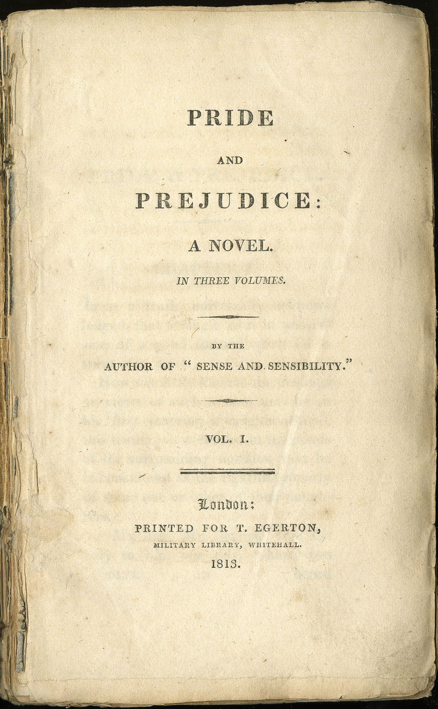

등장인물
엘리자베스 베넷 (Elizabeth Bennet)
베넷 부부의 둘째 딸로 이 소설의 주인공이다. 20세 정도의 나이에 밝고 활발하며 씩씩해서 어떤 자리에서도 기죽지 않는 당찬 성품을 가진다. 자매들 중에 가장 영리해 아버지의 사랑을 받는다. 언니 제인, 외삼촌 가디너와 외숙모, 그리고 친구 샬럿 루카스와 친하다. 애칭 '리지' '일라이자'
피츠윌리엄 다아시 (Fitzwilliam Darcy)
이 소설의 주요 남자 주인공이자 28살의 독신자로, 빙리 씨의 친한 친구이자 엄청난 재산을 가진 신사이다. 키가 훤칠하고 잘생겼으며 예의바른 태도를 갖추었다. 하지만 거만하고 차가운 듯한 성격으로 좋은 첫인상을 주는 사람은 되지 못한다. 그러나 그를 잘 아는 사람들 사이에서는 존경받고, 사실은 마음이 깊고 배려가 많다.